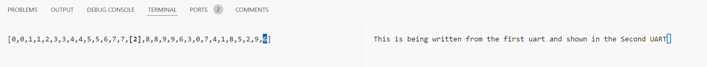

Requirements
In this session we will work with interrupts on the Ibex system. To download the Ibex system you can go to https://github.com/willmontaraces/ibex-demo-system However, as we will be extending our previous lab’s work, I recommend to create a copy of your existing ibex demo system with your existing software and hardware modifications. If you have not completed the initial SoC lab work, please complete it, as we will use the two UARTs previously instantiated.
Exercises
Exercise 1. Interrupts in our Ibex system
Take a look at the exceptions and interrupts section in the Ibex documentation. Analyze the ibex_demo_system implementation in ibex-demo-system/rtl/system and answer the following questions. You must answer the questions in a file named [your_name]_1.txt and attach them to poliformat
- Which devices are connected to the system and are capable of generating interrupts?
- List these devices and their interrupt ID using the documentation
- Is your new UART in this list? If not, add it. Which ID would it take?
- Will this setup for connecting the UART work in a multicore system?
- Check the interrupt signal from your UART located in
rtl/system/uart.sv. When is it asserted and deasserted? Is this behavior the described in the theory session?
Exercise 2. Reading from the UART using polling
Take the following main code and adapt it to use your puts and putchar functions. You can do so by replacing this code calls by your puts_long and putchar_long equivalent functions. If you do not know how to do this, ask the professor.
#include <stdbool.h>
#include "demo_system.h"
#include "gpio.h"
#include "pwm.h"
#include "timer.h"
#define STUDENT_UART UART_FROM_BASE_ADDR(put your uart address here)
#define ARRAY_SIZE 30
void generateIntegers(int* a, int length){
bool all_same = true;
for(int i = 0; i < length; i++){
a[i] = timer_read() % 10;
if( i > 1 && a[i] != a[i-1]){
all_same = false;
}
}
if(all_same){
for(int i = length - 1; i > 0; i--){
a[length-1-i] = i%10;
}
}
}
//returns true if still sorting
int step(int* a, int length){
for(int i = 0; i < length; i++){
for(int j = 0; j < length - 1; j++){
if(a[j] > a[j + 1]){
int temp = a[j];
a[j] = a[j + 1];
a[j + 1] = temp;
return j;
}
}
}
return -1;
}
void print_array(int* a, int length,int value, uart_t uart){
putchar_long('[', uart);
for(int i = 0; i < length; i++){
if(value == i) puts_long("\e[1m[", uart);
putchar_long(a[i]+'0', uart);
if(value == i) puts_long("]\e[0m", uart);
if(i != length-1) putchar_long(',', uart);
}
putchar_long(']', uart);
putchar_long('\r', uart);
}
int main(void) {
int a[ARRAY_SIZE];
generateIntegers(a, ARRAY_SIZE);
while (1) {
//generate integers to be sorted
int value_sorted = step(a, ARRAY_SIZE);
print_array(a, ARRAY_SIZE, value_sorted, DEFAULT_UART);
if(value_sorted == -1){
generateIntegers(a, ARRAY_SIZE);
}
/*
INSERT YOUR CODE HERE
YOUR CODE NEEDS TO
- READ INPUT FROM UART0
- WRITE THE INPUT FROM UART0 INTO YOUR NEW UART
*/
}
}And modify it to use the first UART as input. Printing the text being written to that UART on the second UART (Student UART). You must NOT use interrupts. Your output should be as shown in the following figure

In this code we are sorting an array using bubble sort on the left UART (DEFAULT_UART), reading the input from the DEFAULT UART and showing it on real time on the right UART (Your implemented UART)
Save your code as main_polling.c and upload it to the poliformat task.
Then, think about the following questions:
- If the user does not input anything into the UART, is it efficient to check endlessly for new input? Are we wasting CPU cycles?
- Is there any way to make text output more responsive to text input?
- Change ARRAY_SIZE to 300, what happens with your UART output? If you don’t know the answer to any of these questions, please ask the professor, here is the best time to understand your code. Answer these questions in a file named [your_name]_2.txt and attach it to poliformat
Exercise 3. Reading from the UART using interrupts
Now we will interface with the UART using interrupts.
Take a look at the install_exception_handler function inside of sw/c/common/demo_system and answer the following questions:
- Describe what does the function do. Why are we checking offset bounds? What is the content of the jmp_ins variable at the end of the execution.
- Are we using standard or vectored interrupt addressing?
Answer these questions in a file named [your_name]3.txt but do not upload it to poliformat yet, there are more questions
Now let’s use this function to install a handler to the UART interruption. Let’s define our interrupt handler as follows:
void uart_interrupt_handler(void) __attribute__((interrupt));
void uart_interrupt_handler(void){
//Write your code here
}Install your interrupt handler using the install_exception_handler function, then, use the enable_interrupts(mask) and set_global_interrupt_enable(state) to enable interrupts in our system. Then, comment the previous exercise polling code and execute our program.
Upload your main.c code to poliformat with the name main_basic_interrupts.c
Then, answer the following questions:
- If the user does not input anything into the UART are we still wasting CPU cycles?
- What is now the delay between text input and output?
- Change ARRAY_SIZE to 300, what happens with your UART output? Answer these questions on the previous [your_name]3.txt and upload it to poliformat
Extra exercise. Direct vectoring mode
As we have explained in the previous theory session there are two interrupt modes. Direct, and vectored. Adapt your code to use the direct vectoring mode instead of the default mode. This exercise is non-deliverable, but if you did it I would appreciate a report of how you did it and if you enjoyed it ;)